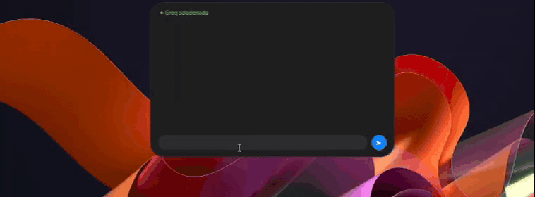
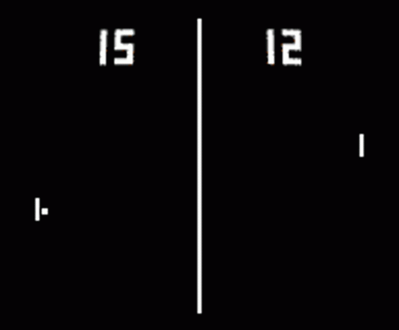

Linguagens
- C#
- Python
- C
DESENVOLVEDOR EM CONSTANTE EVOLUÇÃO
Olá, sou Luiz Marcelo. Desenvolvedor com foco em C#, .NET e desenvolvimento de software. Tenho interesse em criar aplicações, explorar novas tecnologias e desenvolver soluções que resolvam problemas reais.
Sobre
Minha trajetória profissional começou com o desenvolvimento de ativos digitais e animação 2D, experiência que me proporcionou contato com organização de projetos, processos criativos e resolução de problemas.
Atualmente, estou direcionando minha carreira para o desenvolvimento de software, aprofundando meus conhecimentos em C#, .NET, lógica de programação e inteligência artificial.
Gosto de aprender na prática, construir projetos próprios e explorar tecnologias que permitam transformar ideias em aplicações funcionais.
Habilidades
Projetos

Aplicação desktop desenvolvida em C# e WPF com o objetivo de criar um assistente pessoal de inteligência artificial para Windows. O projeto explora integração com modelos de linguagem locais através do LM Studio e com serviços externos de IA, buscando oferecer uma experiência de conversação, gerenciamento de histórico e funcionalidades para auxiliar em tarefas do sistema operacional.

Recriação do clássico jogo Pong utilizando C# e programação orientada a objetos, desenvolvida para praticar fundamentos de programação, organização de classes, lógica de jogo e interação com o usuário.
Experiência e formação
Atuação no desenvolvimento de ativos digitais e animação 2D, com participação na organização de projetos, estruturação de processos e otimização de fluxos de trabalho.
Formação voltada ao desenvolvimento de software, engenharia de sistemas, lógica de programação e fundamentos da computação.
Engenharia de Inteligência Artificial e Ciência de Dados.
Desenvolvimento de Sistemas Interativos com Unity Engine.
Estou sempre buscando aprender, desenvolver novos projetos e explorar oportunidades na área de tecnologia. Se quiser conhecer meu trabalho ou conversar sobre desenvolvimento de software, entre em contato.
Enviar mensagem